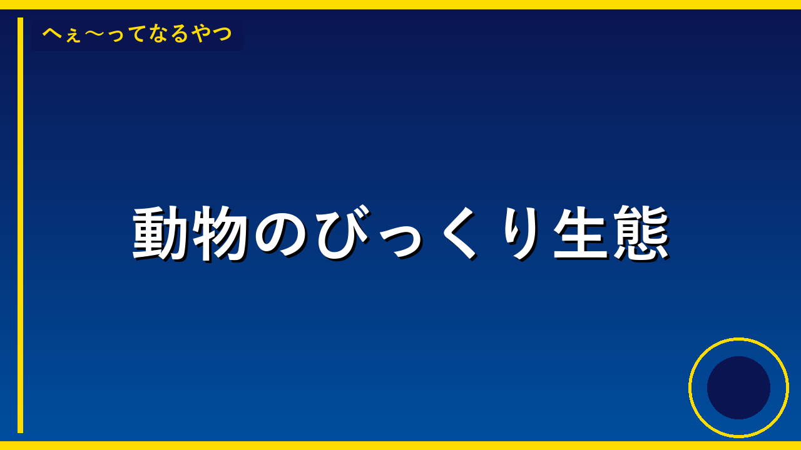
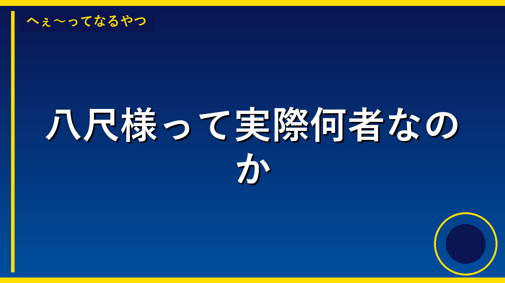

飲食店の“AI商品画像”は景品表示法違反にならないの？ 弁護士の見解
飲食店がメニューの写真をAIで作ると、実物と違う見た目になってしまうことがあります。これは、お客さんをだましているのではないかという問題が起きています。日本の法律では、商品の写真がウソだと詐欺になる可能性があるので、飲食店はAIで作った写真をメニューに使うときは気をつけないといけません。もし実物と大きく違う写真を使うと、お客さんが怒ったり、お店が罰せられたりすることがあるかもしれません。
鉄道運転シミュレーターをマイクロバスに搭載「ライドライブ」 東急テクノシステムが開発
東急テクノシステムという会社が、バスの中に電車の運転を体験できる機械を入れた「ライドライブ」という乗り物を作りました。これは、電車の運転がどんな感じなのかを、バスに乗りながら楽しく学べるようにしたものです。2027年11月から売り始めるので、学校の学習や駅での展示など、いろいろな場所で電車の勉強や体験ができるようになります。
アディーレ法律事務所、個人情報約1828件漏えい 氏名や問い合わせ内容など……委託先「メール商人」に不正アクセス
アディーレ法律事務所という会社が、顧客の個人情報が漏れてしまう事件がおきました。名前やメールアドレス、電話番号、相談の内容など、約1828人分の大切な情報が、仕事を頼んでいた別の会社のコンピューターに不正に入られてしまったのです。個人情報が悪い人に使われると、詐欺や迷惑電話の被害にあう危険があるため、とても重要な問題です。この事件によって、会社から相談を受けていた人たちが心配や不安になってしまいます。

PS5『地球防衛軍6.2』生放送まとめ。新要素のカスタマイズ機能の仕組みが紹介、物量地獄には特殊効果重ね掛けの突撃が決め手
ゲーム『地球防衛軍6.2』の新しい機能が発表されました。この作品では、武器を自分好みに改造できるカスタマイズ機能が新しく追加されたのです。大量の敵を倒すときは、特殊な効果を重ねてつかうことで、より強い力を出せるようになります。このような新しい遊び方ができるようになったことで、ゲームをもっと楽しく、自分のやり方でプレイできるようになりました。

PS5/PC大作武侠アクション『Phantom Blade Zero』アプデでついに“ふりがな”実装へ。「左殤」や「沐小葵」など、難読人名が読みやすくなりそう
ゲームの『Phantom Blade Zero』という作品に、11月28日にアップデートという更新がされます。この更新で、登場人物の名前など難しい漢字に「ふりがな」がつくようになります。これまで「左殤」や「沐小葵」のような難しい名前が読みにくかったのですが、今後は誰でも読みやすくなるので、より多くの人がゲームを楽しめるようになります。

『モンスターハンターNow』開発者インタビュー。大阪を巡る回遊型リアルイベントの狙いから、電車プレイ対応、スコープリー買収後の開発体制まで聞いた
「モンスターハンターNow」というゲームが大阪でリアルイベントを開いたり、電車の中でも遊べるようにしたりと、いろいろな工夫をしています。このゲームを作っている会社が、スコープリーという別の会社に買収されてから、どのように開発を続けているかをインタビューで聞きました。リアルイベントで実際に街を歩きながらゲームで遊べるようにすることで、より多くの人にゲームを楽しんでもらうことが目的です。このような工夫により、ゲームがより身近で楽しいものになり、より多くのプレイヤーが長く遊び続けることが期待できます。

「ちいかわクリニック」第2弾グッズ一覧公開！ボンボンドロップシールや、くりまんじゅうの“ほどよく飲酒する”タンブラーなどが12月11日発売
「ちいかわ」というかわいいキャラクターのクリニック(病院)をテーマにした新しいグッズが12月11日に売られることになりました。シールやタンブラー(飲み物を入れるコップ)など、いろいろな種類があります。このグッズは前に売られたものが大人気だったので、第2弾として新しく作られました。ちいかわが好きな人たちが、このグッズを買うことを楽しみにしています。

「頭文字D」藤原拓海の愛車“ハチロク”が漫画風キーチェーンに！ 第2弾は「後期版」♪ 前期版と並べて飾れる
人気漫画「頭文字D」の主人公が乗っている有名な車「ハチロク」がキーチェーンになって売られることになりました。今回は新しい「後期版」が出て、前に出た「前期版」と一緒に飾ることができるようになりました。ファンがどちらも欲しくなるように工夫されていて、漫画ファンにとって嬉しいニュースです。このように人気作品のグッズをどんどん新しく出すことで、お店の売上が増えたり、ファンが商品を集めたくなったりする効果があります。

「ガンダムエース」安彦良和らの渾身の一枚をその手に！25周年記念の複製原稿・原画が「カドスト」で並行受注
ガンダムの漫画や設定画を作った安彦良和さんたちの、25年前の大事な絵や原稿が特別に複製されて、カドスト(角川書店のお店)で買えることになりました。これは「ガンダムエース」という雑誌が25周年を迎えるお祝いの企画です。ファンたちは、プロの漫画家さんが実際に描いた貴重な絵を手に入れることができるようになって、とても喜んでいます。この企画により、ガンダムファンだけでなく、漫画や絵の大切さを多くの人が知ることができるチャンスになります。
ラッコが手をつないで眠る理由 石を持ち歩く驚きの習性とは
海に浮かんで眠るラッコには、流されないための工夫があった。お気に入りの石を持ち歩く理由も含め、知られざる生態を紹介する。

八尺様は2008年生まれ？一投稿から広がった都市伝説の正体
身長2m40cmの白装束の女性が若い男性を襲う怪談「八尺様」。実は2ちゃんねるの一投稿から始まった都市伝説だった。